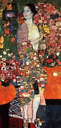

also on this site Espiritu Norie: a topological short story
If you are already familiar with the biomorph concept described in Richard Dawkins' book "The Blind Watchmaker", skip ahead to the Quick Start section below.
This applet lets you experiment with breeding artificial creatures called biomorphs,causing them to gradually evolve into a diversity of forms. The biomorphs start out as tree-like shapes, whose physical conformation is determined by 9 different genes, affecting things like the length and angle of branches, the colour, etc. (See the Genes section for details). The applet displays a "parent" biomorph together with a litter of "mutant" progeny, each of which differs from the parent in some slight way.
You select whichever child most strikes your fancy to become the parent of the next litter... and so on. After a few generations of this kind of selective breeding, you will start to produce children that look nothing like the original tree. With a little bit of effort you can obtain biomorphs that look like insects, butterflies, frogs, bats or candelabra - to name a few. If you'd rather skip the effort, there is also "Random" button for instantly reshuffling the genes.
Click the button (which should appear at left) to start the applet. You might want to enlarge or maximise the applet window for a better view. You can still refer back to this page when the applet is running. The parent morph will appear in the top left corner, together with a litter of its offspring. Click on the child you like best to choose it as the parent of the next litter. Or, if you feel stuck in an evolutionary rut, use the "Random" button to mix up a new genetic cocktail.
There is an autoscaling feature which keeps the morphs down to a reasonable size, but you can also manually enlarge or shrink them with the "+" and "-" buttons. The parent morph's genes are shown in the text boxes. You can experiment with altering these by directly typing the desired values into the text boxes and hitting the "Enter" key. And last but not least, don't forget to take a look at the status message on the lower left -- as you move your mouse pointer around it tells you which mutation corresponds to which biomorph.
The expand X/Y genes are automatically ajdusted to fit the morph into the panel during breeding, or when the "Enter" key is pressed. Note that this does not affect the shape of the morph in any way. If you want to enlarge the morph unencumbered by autoscaling, use the "+" button.
The table below describes the 9 genes and how they affect the shape of the biomorphs:
| Gene | Units | Range | Description |
|---|---|---|---|
| Front angle | degrees | 0 to +/-360° | Angle of the branches which point toward the front (top) of the morph |
| Rear angle | degrees | 0 to +/-360° | Angle of the branches which point toward the back (bottom) of the morph |
| Front elongation | multiplicative factor | 0 to +/- 9.0 | Elongation or foreshortening of the branches which point toward the front (top) of the morph |
| Rear elongation | multiplicative factor | 0 to +/- 9.0 | Elongation or foreshortening of the branches which point toward the back (bottom) of the morph |
| Expand X | multiplicative factor | 0 to +/- 9.0 | Makes the morph fatter or skinnier |
| Expand Y | multiplicative factor | 0 to +/- 9.0 | Makes the morph taller or shorter |
| Iterations | # | 0 to 9 | The number of times the branching is repeated |
| Gradient | multiplicative factor | 0 to +/-1.5 | Amount by which the branch segments become shorter or longer at each successive iteration |
| Colour | # | 0 to +/-255 | The hue of the morph |
Note that the branch lengths can be negative, in which case the front angle will actually affect the backside of the morph and vice versa. The same applies to the front/rear elongation.
This is how the parent biomorph and its offspring are laid out in the applet window. Each child has a mutation which increases or decreases the value of one of the 9 genes.
| Parent | Front angle + | Front angle - | Rear angle + | Rear angle - |
| Front elongation + | Front elongation - | Rear elongation + | Rear elongation - | Expand X + |
| Expand X - | Expand Y + | Expand Y - | Iterations + | Iterations - |
| Gradient+ | Gradient- | Colour+ | Colour- | Wildcard |
This applet is based on the biomorph program described in the book: The Blind Watchmaker - Why the Evidence of Evolution Reveals a Universe without Design - by Richard Dawkins.
Other science applets you might like to try on this site are the cellular automata Conway's Game of Life and Langton's Ant .